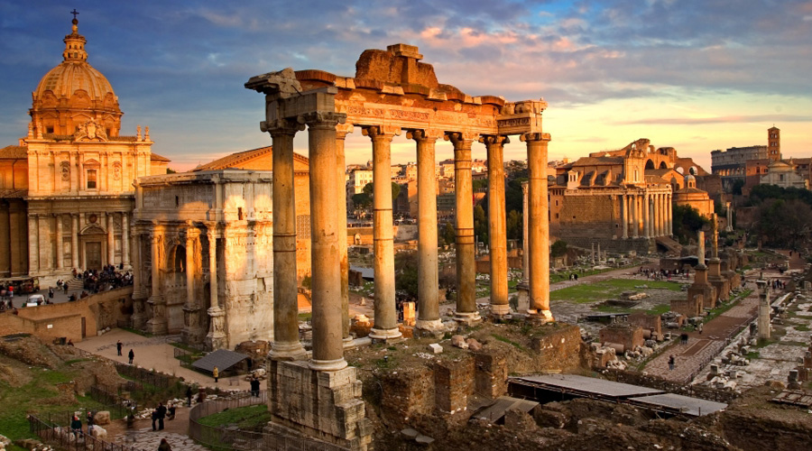

ЦІКАВІ ФАКТИ ПРО РИМ
Могутній Стародавній Рим був однією з найбільш розвинених цивілізацій своєї епохи. Там, куди приходила Римська Імперія, разом з нею приходили закон і порядок. Римляни підкорили величезні простори, вийшовши далеко за межі Середземномор’я, але їхня імперія все одно пала. Нам від тих часів залишилось лише численна антична спадщина, що свідчить про рівень культури і розвитку давньоримської держави.

- У Великобританії подекуди досі збереглися дороги, побудовані римлянами майже 2000 років тому.
- Розквіт Стародавнього Риму припав на період близько 2200 років тому.
- Незважаючи на свою освіченість, римляни не знали деяких важливих речей, відомих нам. Наприклад, вони робили водопровідні труби з м’якого і податливого свинцю, не підозрюючи про те, якої шкоди він може завдати здоров’ю (цікаві про свинець)
- Саме в Стародавньому Римі зародилася християнська релігія.
- Офіційного герба у Римській Імперії не було, але де-факто ним був золотий орел.
- Найкривавішою розвагою в Стародавньому Римі були гладіаторські бої, причому кров убитих воїнів поспіхом збирали, а потім продавали, як ліки.
- Час в Римській Імперії вимірювалося інакше — римляни орієнтувалися на світловий день, тому влітку годину міг тривати близько 75 хвилин, а взимку скорочувався до 44.
- Колір одягу в Стародавньому Римі безпосередньо відбивав громадське й соціальне становище. Одяг, штучно пофарбована у яскраві кольори, була надбанням лише знаті і багатіїв.
- Раби становили до 40% всього населення Римської Імперії.
- Знаменитий Колізей вміщав до 200 тисяч глядачів.
- Стародавній Єгипет упав в епоху правління знаменитої цариці Клеопатри, коли Древній Рим завоював його. Причому завоювання могло б статися й раніше, якби Гай Юлій Цезар, а потім і Марк Антоній не закохалися в Клеопатру і не призупинили тим самим завоювання Єгипту.
- Однією з ознак жіночої краси та розуму в Стародавньому Римі вважалися зрослі на переніссі брови.
- Давньоримські лікарі були дуже обізнані в медицині. Зокрема, була розвинена стоматологія, і вже в ту епоху люди вміли вставляти зубні протези.
- Воєначальники в Стародавньому Римі ніколи не билися самі, хоча зазвичай їм потрібно було пройти шлях від солдата до командира особисто, набравшись досвіду в боях.
- Багато давньоримські імператори щодня приймали мікроскопічні дози різних отрут, щоб виробити до них імунітет і тим самим уникнути можливого отруєння.
- Римляни використовували людські фекалії в якості добрив, не знаючи про те, що тим самим сприяють поширенню різних паразитів.
- На бенкетах в Стародавньому Римі вважалося нормою час від часу спустошувати шлунок за допомогою блювоти, щоб повернутися за стіл і продовжити є.
- Італія є спадкоємицею Римської Імперії, але нащадками у римлян більшою мірою є румуни, ніж італійці (цікаві факти про Італію).
- У давньоримських жінок був звичай фарбувати волосся. Спочатку фарбоване волосся було ознакою дам легкої поведінки, але пізніше цей звичай поширився і серед знаті, поклавши початок новій моді.
- Замість мила в Стародавньому Римі використовувалися ароматні олії. Ними натирали тіло, а потім очищали його спеціальними скребками.
- Серед римлян був поширений звичай митися щодня.
- В якості заміни прального порошку стародавні римляни використовували людську сечу.
- У Стародавньому Римі вперше у світі з’явилися громадські туалети, причому платні. Саме з цією подією пов’язана відома фраза «гроші не пахнуть». Так відповів імператор Веспасіан своєму синові, коли той докоряв його за стягування плати за відвідування туалетів.
- Після розколу Римської Імперії вона розкололася на дві частини, Східну і Західну. Столицею Західної Римської Імперії залишився Рим, а столицею Східної став Константинополь, який на Русі називали Царгородом. Пізніше захопили турки-османи перейменували місто в Стамбул (цікаві факти про Османську імперію).
- Щорічно в Стародавньому Римі проводилися Сатурналії, фестиваль в честь бога Сатурна. У ці дні раби користувалися привілеями — могли, наприклад, їсти за одним столом з господарями, а іноді навіть ті самі накривали на стіл.
- Звичай цілуватися після оголошення про укладення законного шлюбу зародився саме в Римській Імперії.
- У числі інших грошей в Стародавньому Римі використовувалися спінтрії, монети із зображеними на них непристойними картинками. Їх використовували для оплати послуг в публічних будинках.
- Саме знаменитий римлянин Цезар ввів високосний рік.
- липні і серпні до 31 дня поспіль, так як римляни відняли один день від лютого і додали його в серпень на честь імператора Августа.
- Давньоримський лікар-хірург, який не зумів врятувати пацієнта, міг позбутися обох рук. Не завжди, звичайно, а лише в тому випадку, якщо пацієнт помирав з причини його некомпетентності.